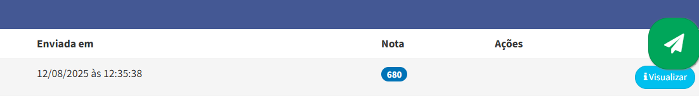
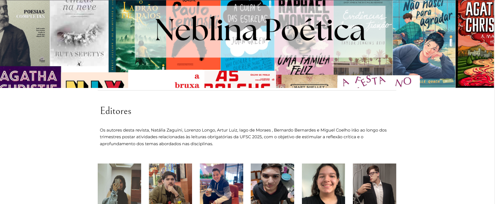
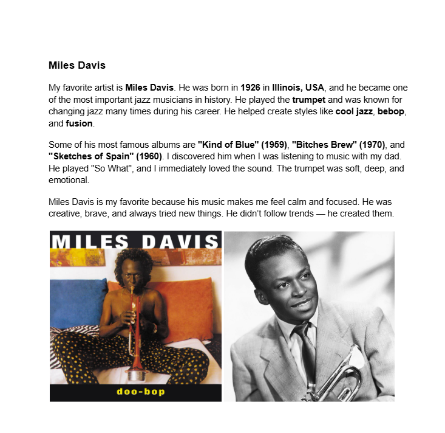

Nota da redação do segundo trimestre
Os autores desta revista, Natália Zaguini, Lorenzo Longo, Artur Luiz, Iago de Moraes , Bernardo Bernardes e Miguel Coelho irão ao longo dos trimestres postar atividades relacionadas às leituras obrigatórias da UFSC 2025, com o objetivo de estimular a reflexão crítica e o aprofundamento dos temas abordados nas disciplinas.
Acessar Atividade organizamos como vamos trabalhar as leituras obrigatórias da UFSC 2025. A professora explicou como devemos fazer as avaliações no Padlet e começamos a montar uma revista literária em grupo. Eu e meus colegas formamos um grupo com até 4 pessoas, demos um nome à revista e criamos a capa no Canva. A ideia é ir postando nela todas as atividades sobre as obras durante o ano. Achei a proposta criativa e diferente, dá até vontade de caprichar mais nas atividades.
vocês irão produzir um trabalho para o portfólio de vocês. Separam uma parte da área de Linguagens para falar sobre os artistas e obras que vocês mais gostam. Nessa parte, você precisa escrever sobre três coisas: Seu artista favorito: fale sobre a sua biografia, obras mais famosas, como você conheceu ele e porque ele é seu favorito;
